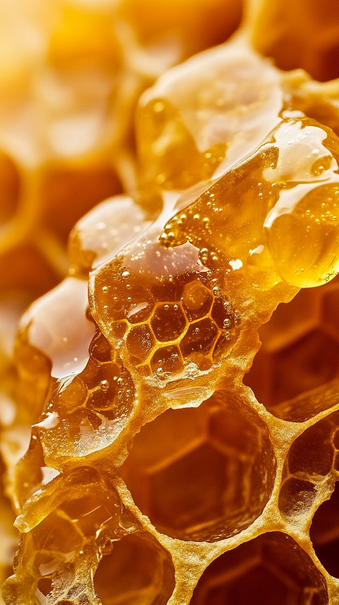

Ingredient History
Every MozaGlow product carries the spirit of Mozambique from the towering baobab trees of Inhambane to the sun-kissed marula groves of Gaza. These ingredients aren’t just natural; they’re cultural treasures, passed down through generations of wisdom, healing, and beauty. This gallery is a celebration of that heritage. It invites you to explore the stories behind our skincare the rituals, the landscapes, and the people who inspire every drop, every blend, every glow.

Baobab Fruit
Known locally as “the tree of life,” baobab is rich in vitamins A, D, E, and F. Mozambican women use its pulp and oil to soften skin and heal sun damage.

Moringa Leaves & Oil
Used in rural communities to treat inflammation and nourish dry skin, moringa is a powerful antioxidant with deep cultural roots in northern Mozambique.

Coconut Oil
Harvested along the coast, coconut oil is a staple in Mozambican households — used for cooking, hair care, and moisturizing rituals passed down through generations.

Marula Fruit
In Shangaan communities, marula is both food and medicine. Its oil is prized for its silky texture and ability to protect skin during dry seasons.

Wild Honey
Collected from forest hives, wild honey is used in traditional healing and skin rituals. It’s naturally antibacterial and deeply hydrating.

Kaolin Clay
Used in Maputo and rural baths, white clay gently purifies the skin. It’s a mineral-rich exfoliant that soothes irritation and balances oil.